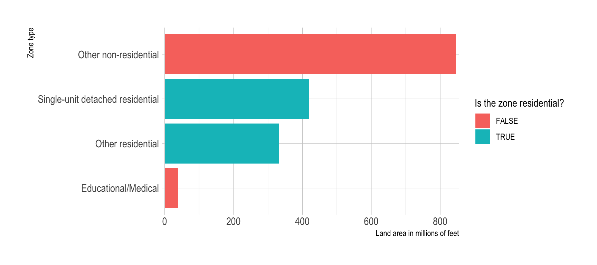
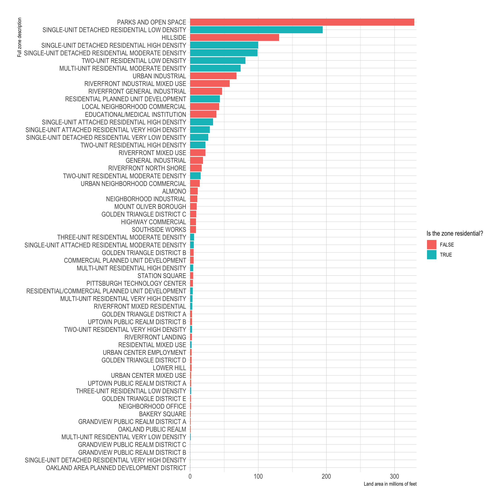
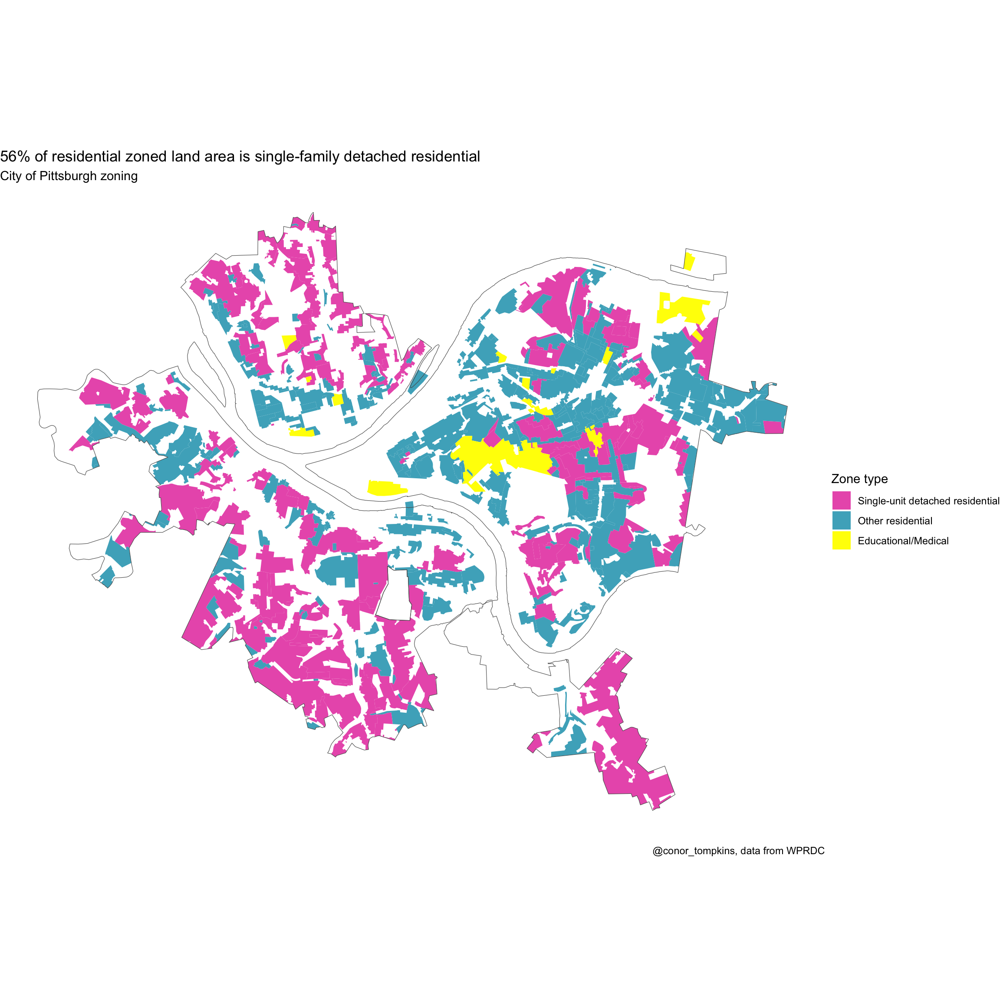

library(tidyverse)
library(sf)
library(ggmap)
library(janitor)
library(hrbrthemes)
options(scipen = 999)The New York Times recently published an article about zoning in U.S. cities, particularly single-unit detached residential housing. The article did not include Pittsburgh, so I downloaded the zone shapefile from the WPRDC and made my own map.
This blog quickly goes through the steps to make the map and other graphs about the data.
First, load the required libraries and set up the environment:
Read in the shapefile with st_read and inspect the data with glimpse:
shapefile <- st_read("post_data/Zoning-shp/Zoning.shp")Reading layer `Zoning' from data source
`/Users/conorotompkins/Documents/github_repos/ctompkins_quarto_blog/posts/residential-zoning-in-pittsburgh/post_data/Zoning-shp/Zoning.shp'
using driver `ESRI Shapefile'
Simple feature collection with 1061 features and 19 fields
Geometry type: MULTIPOLYGON
Dimension: XY
Bounding box: xmin: 1315934 ymin: 381925.6 xmax: 1379759 ymax: 433399.4
Projected CRS: NAD83 / Pennsylvania South (ftUS)glimpse(shapefile)Rows: 1,061
Columns: 20
$ OBJECTID <int> 1, 2, 3, 4, 5, 6, 7, 8, 9, 10, 11, 12, 13, 14, 15, 16, 17, …
$ perimeter <dbl> 4020.2318, 3522.5948, 2748.8339, 715.3339, 4499.1899, 2498.…
$ zoning_ <int> 2, 3, 4, 5, 6, 7, 8, 9, 10, 11, 12, 13, 14, 16, 17, 18, 19,…
$ zoning_id <int> 2, 3, 4, 5, 6, 7, 8, 9, 10, 11, 12, 13, 14, 16, 17, 18, 19,…
$ zon_new <chr> "P", "P", "LNC", "LNC", "P", "HC", "LNC", "R1D-M", "R1D-M",…
$ shape_leng <dbl> 4020.2318, 3522.5948, 2748.8339, 715.3339, 4499.1899, 2498.…
$ correction <chr> NA, NA, NA, NA, NA, NA, NA, NA, NA, NA, NA, NA, NA, NA, NA,…
$ full_zonin <chr> "PARKS AND OPEN SPACE", "PARKS AND OPEN SPACE", "LOCAL NEIG…
$ legendtype <chr> "Parks", "Parks", "Local Neighborhood Commercial", "Local N…
$ municode <chr> "http://library.municode.com/HTML/13525/level4/PIZOCO_TITNI…
$ status <chr> "Approved", "Approved", "Approved", "Approved", "Approved",…
$ created_us <chr> NA, NA, NA, NA, NA, NA, NA, NA, NA, NA, NA, NA, NA, NA, NA,…
$ created_da <date> NA, NA, NA, NA, NA, NA, NA, NA, NA, NA, NA, NA, NA, NA, NA…
$ last_edite <chr> NA, NA, NA, NA, NA, NA, NA, NA, NA, NA, NA, NA, NA, NA, NA,…
$ last_edi_1 <date> NA, NA, NA, NA, NA, NA, NA, NA, NA, NA, NA, NA, NA, NA, NA…
$ pghdb_sde_ <dbl> 404170.093, 332097.787, 192093.378, 22816.707, 962349.849, …
$ GlobalID <chr> "b54df7d1-57d2-4175-8a34-5334046e889b", "1ea53324-e92d-4394…
$ Shape__Are <dbl> 404170.093, 332097.787, 192093.378, 22816.707, 962349.849, …
$ Shape__Len <dbl> 4020.2318, 3522.5948, 2748.8339, 715.3339, 4499.1899, 2498.…
$ geometry <MULTIPOLYGON [US_survey_foot]> MULTIPOLYGON (((1367528 381..., M…We need to munge the data to get it in shape for analysis. This makes some simple TRUE|FALSE flags for basic zone information and uses case_when to create type, which represents aggregated zone types.
df <- shapefile %>%
mutate(residential = str_detect(full_zonin, "RESIDENT"),
single_unit = str_detect(full_zonin, "SINGLE-UNIT"),
attached = str_detect(full_zonin, "ATTACHED"),
type = case_when(residential == TRUE & single_unit == TRUE & attached == FALSE ~ "Single-unit detached residential",
residential == TRUE & single_unit == FALSE | attached == TRUE ~ "Other residential",
full_zonin == "EDUCATIONAL/MEDICAL INSTITUTION" ~ "Educational/Medical",
residential == FALSE ~ "Other non-residential"),
type = factor(type, levels = c("Single-unit detached residential",
"Other residential",
"Educational/Medical",
"Other non-residential")),
alpha_flag = type == "Single-unit detached residential") |>
rename(area = Shape__Are)Rows: 1,061
Columns: 24
$ OBJECTID <int> 1, 2, 3, 4, 5, 6, 7, 8, 9, 10, 11, 12, 13, 14, 15, 16, 17,…
$ perimeter <dbl> 4020.2318, 3522.5948, 2748.8339, 715.3339, 4499.1899, 2498…
$ zoning_ <int> 2, 3, 4, 5, 6, 7, 8, 9, 10, 11, 12, 13, 14, 16, 17, 18, 19…
$ zoning_id <int> 2, 3, 4, 5, 6, 7, 8, 9, 10, 11, 12, 13, 14, 16, 17, 18, 19…
$ zon_new <chr> "P", "P", "LNC", "LNC", "P", "HC", "LNC", "R1D-M", "R1D-M"…
$ shape_leng <dbl> 4020.2318, 3522.5948, 2748.8339, 715.3339, 4499.1899, 2498…
$ correction <chr> NA, NA, NA, NA, NA, NA, NA, NA, NA, NA, NA, NA, NA, NA, NA…
$ full_zonin <chr> "PARKS AND OPEN SPACE", "PARKS AND OPEN SPACE", "LOCAL NEI…
$ legendtype <chr> "Parks", "Parks", "Local Neighborhood Commercial", "Local …
$ municode <chr> "http://library.municode.com/HTML/13525/level4/PIZOCO_TITN…
$ status <chr> "Approved", "Approved", "Approved", "Approved", "Approved"…
$ created_us <chr> NA, NA, NA, NA, NA, NA, NA, NA, NA, NA, NA, NA, NA, NA, NA…
$ created_da <date> NA, NA, NA, NA, NA, NA, NA, NA, NA, NA, NA, NA, NA, NA, N…
$ last_edite <chr> NA, NA, NA, NA, NA, NA, NA, NA, NA, NA, NA, NA, NA, NA, NA…
$ last_edi_1 <date> NA, NA, NA, NA, NA, NA, NA, NA, NA, NA, NA, NA, NA, NA, N…
$ pghdb_sde_ <dbl> 404170.093, 332097.787, 192093.378, 22816.707, 962349.849,…
$ GlobalID <chr> "b54df7d1-57d2-4175-8a34-5334046e889b", "1ea53324-e92d-439…
$ area <dbl> 404170.093, 332097.787, 192093.378, 22816.707, 962349.849,…
$ Shape__Len <dbl> 4020.2318, 3522.5948, 2748.8339, 715.3339, 4499.1899, 2498…
$ residential <lgl> FALSE, FALSE, FALSE, FALSE, FALSE, FALSE, FALSE, TRUE, TRU…
$ single_unit <lgl> FALSE, FALSE, FALSE, FALSE, FALSE, FALSE, FALSE, TRUE, TRU…
$ attached <lgl> FALSE, FALSE, FALSE, FALSE, FALSE, FALSE, FALSE, FALSE, FA…
$ type <fct> Other non-residential, Other non-residential, Other non-re…
$ alpha_flag <lgl> FALSE, FALSE, FALSE, FALSE, FALSE, FALSE, FALSE, TRUE, TRU…This counts the number of rows per full zone description (full_zonin) and type:
df_zones <- df %>%
count(full_zonin, type, sort = TRUE) %>%
st_drop_geometry()Rows: 59
Columns: 3
$ full_zonin <chr> "PARKS AND OPEN SPACE", "LOCAL NEIGHBORHOOD COMMERCIAL", "S…
$ type <fct> Other non-residential, Other non-residential, Single-unit d…
$ n <int> 153, 125, 75, 70, 65, 54, 52, 44, 42, 42, 41, 38, 36, 19, 1…Create a basic bar chart to show the distribution of type:
df %>%
st_drop_geometry() %>%
group_by(type, residential) %>%
summarize(area = sum(area)) %>%
ungroup() %>%
mutate(type = fct_reorder(type, area)) %>%
ggplot(aes(type, area / 1000000, fill = residential)) +
geom_col() +
scale_y_comma() +
scale_fill_discrete("Is the zone residential?") +
labs(x = "Zone type",
y = "Land area in millions of feet") +
coord_flip() +
theme_ipsum()
Use a bar chart to show the distribution of full_zonin:
df %>%
st_drop_geometry() %>%
group_by(full_zonin, residential) %>%
summarize(area = sum(area)) %>%
ungroup() %>%
mutate(full_zonin = fct_reorder(full_zonin, area)) %>%
ggplot(aes(full_zonin, area / 1000000, fill = residential)) +
geom_col() +
scale_y_comma() +
scale_fill_discrete("Is the zone residential?") +
labs(x = "Full zone description",
y = "Land area in millions of feet") +
coord_flip() +
theme_ipsum()
This calculates the total land area zoned for any type of residential housing:
df %>%
st_drop_geometry() %>%
mutate(single_unit_flag = type == "Single-unit detached residential") %>%
filter(residential == TRUE) %>%
summarize(total_area = sum(area)) total_area
1 751652465This calculates the % of residential zoning that is zoned for single-unit detached residential housing units:
df %>%
st_drop_geometry() %>%
filter(residential == TRUE) %>%
mutate(single_unit_flag = (type == "Single-unit detached residential")) %>%
group_by(single_unit_flag) %>%
summarize(zone_area = sum(area)) %>%
mutate(pct_area = zone_area / sum(zone_area))# A tibble: 2 × 3
single_unit_flag zone_area pct_area
<lgl> <dbl> <dbl>
1 FALSE 332150155. 0.442
2 TRUE 419502310. 0.558This creates a map of the zones, fills them by type, and overlays it on a GoogleMaps basemap. I also insert the boundaries of the City of Pittsburgh.
city_boundary <- st_read("post_data/Pittsburgh_City_Boundary-shp/City_Boundary.shp")Reading layer `City_Boundary' from data source
`/Users/conorotompkins/Documents/github_repos/ctompkins_quarto_blog/posts/residential-zoning-in-pittsburgh/post_data/Pittsburgh_City_Boundary-shp/City_Boundary.shp'
using driver `ESRI Shapefile'
Simple feature collection with 8 features and 8 fields
Geometry type: POLYGON
Dimension: XY
Bounding box: xmin: 1315934 ymin: 381925.6 xmax: 1379780 ymax: 433399.4
Projected CRS: NAD83 / Pennsylvania South (ftUS)ggplot() +
geom_sf(data = df %>% filter(type != "Other non-residential"), aes(fill = type), inherit.aes = FALSE, size = .5, alpha = 1, color = NA) +
geom_sf(data = city_boundary, inherit.aes = FALSE, alpha = 0, size = 2) +
coord_sf(crs = st_crs(4326)) +
scale_fill_manual("Zone type",
values = c("#ea60b9", "#4cafc5", "yellow", "light grey")) +
labs(title = "56% of residential zoned land area is single-family detached residential",
subtitle = "City of Pittsburgh zoning",
caption = "@conor_tompkins, data from WPRDC") +
theme_void()
I used scale_fill_manual to manually set the color palette to match the NYTimes article.